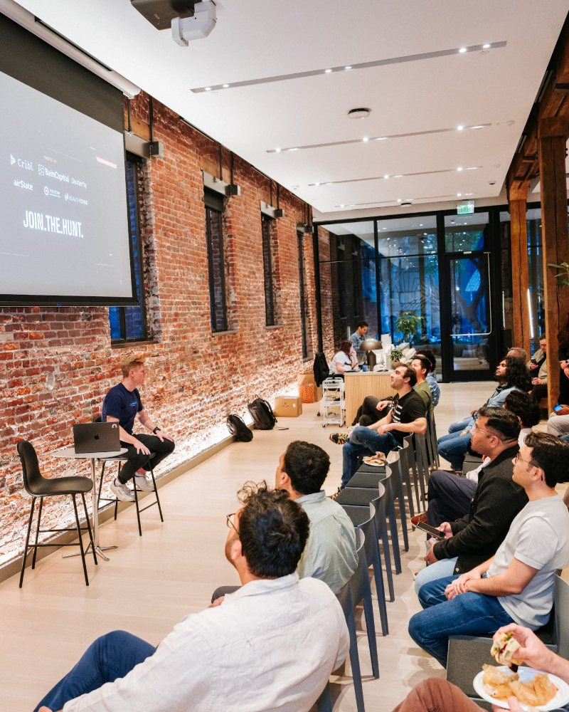
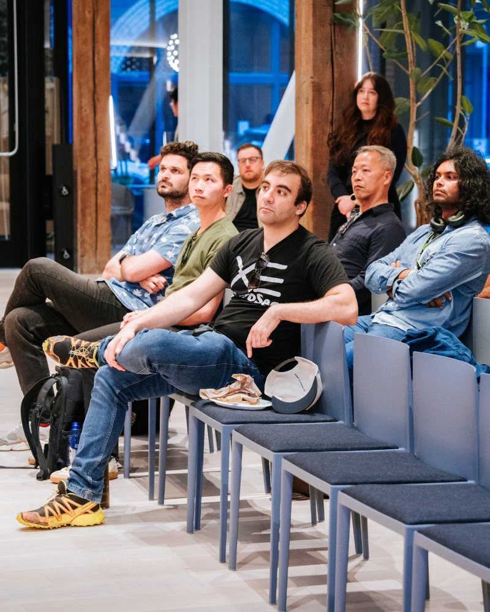
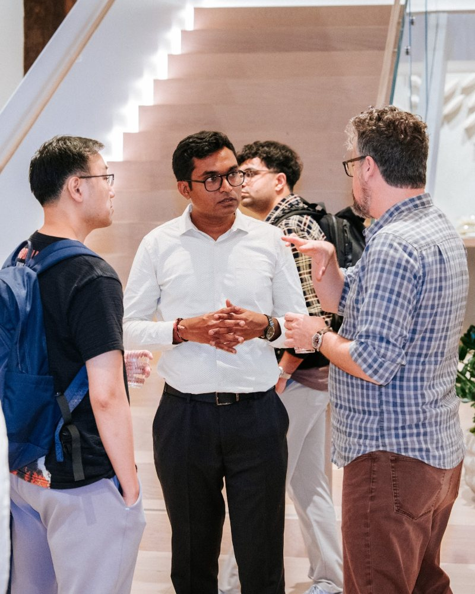

Contingent recruitment
Our most flexible model. We work the search end-to-end and you only pay a placement fee when a candidate signs. No retainer, no commitment. Best when speed and optionality matter more than exclusivity.

Embedded recruiter / Fractional head of talent
We embed a senior Foundr recruiter into your team for a fixed period — your Slack, your tools, your hiring committee. Acts like an in-house lead without the full-time overhead. Built for scaling teams between 10 and 60.

Retained executive search
Single-search, exclusive engagement for senior leadership: CTOs, VPs, Heads of Engineering, Security, GTM. Deeper market scan, longer diligence, more co-design with the founders. The engagement Foundr was built for.
Not sure which fits the moment?
Send us the role and the context. We'll tell you which engagement makes sense — and if none of them do, we'll say that too.